Ders 14
Galiba tüm derslerin sonuna gelmemize 6 hafta civarı kaldı; o zaman artık iki boyutlu sistemler konusunu bitirelim ki böylece üç boyutlu sistemlere yeterince zaman kalsın. Kalan zamanda işleyeceklerimiz kaos, ayrıksal zamanlı sistemler (discrete-time systems) yani özyineli haritalar, ve fraktallar.
İki boyutlu sistemlerde hala işlemediğimiz bazı alanlar var; limit çevrimlerine genel olarak kapalı yörüngelere baktık, bunların nasıl çatallaşabileceğini gördük, ve bu bağlamda çoğunlukla Hopf çatallaşmasına odaklandık, ki bu çatallaşmada bir sarmaldan, ya da sabit noktadan bir limit çevrimi ortaya çıkıyordu. Fakat diğer tür çatallaşmalar da var, bunlardan üç tanesi özellikle doğabilimde çok ortaya çıkıyorlar, şimdi bu çatallaşmalara odaklanmak istiyorum. Bu periyotsal yörüngelerin diğer çatallaşmalarını kitabımın 8.4 bölümünde bulabilirsiniz.
1) Limit Çevrimlerinin Eğer-Düğüm Birleşmesi
Burada stabil ve gayrı-stabil çevrimler çarpışırlar ve birbirlerini yokederler. Bu durumu daha önce işlediğimiz bir sistemde görmüştük; bu sistemde altkritik Hopf çatallaşması vardı, onu işlerken bu çatallaşma da oluyor demiştik. Böyle bir sistemi
$$ \dot{r} = \mu r + r^3 - r^5$$
$$ \dot{\theta} = 1 + b r^2$$
modelinde görebiliriz.
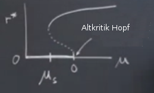
Bizim esas ilgilendiğimiz çatallaşma noktasını grafikte $\mu_s$ ile işaretledim ($s$ eğer (saddle) kelimesi için), ki orada gayrı-stabil dal stabil dal ile birleşiyor. Grafikteki $\dot{r}$ eğrisinin özelliklerinden hareketle $\mu_s = -1/4$ olduğunu hesaplayabiliriz. O noktada çevrimlerin çatallaşması meydana geliyor.
Şimdi grafikteki değişik bölgelerde ne olduğunu inceleyelim. Mesela $\mu < \mu_s$ bölgesinde ne oluyor? Bu bölgede tek çekici (attractor) orijinde.
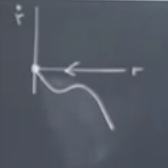
$\dot{r}$'nin orijin haricinde sıfırdan kesin küçük olduğunu gösterebilirsiniz, bunun sonucu üstte görülen eğri. $r$ yönündeki akış ta orijine doğru olacak. Ardından $\dot{\theta}$ için düzlemde kutupsal kordinat sistemine bakalım, bu pek ilginç değil, tekdüze (monotonic) bir şekilde artıyor, bir sarmal ortaya çıkartıyor.
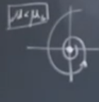
$\mu$'yu arttırdıkça ve $\mu_s$'e yaklaştıkça ilginç bir şey oluyor. $\mu$ hala sıfırda küçüktür diyelim, alttaki grafiğe bakalım, burada büyük bir stabil çevrim var (en üstteki içi dolu nokta) bir de en altta stabil sabit nokta var. İkisinin ortasında gayrı-stabil limit çevrimi var.
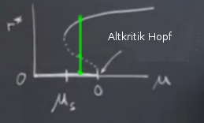
Gayri-stabil çevrim alttaki grafikte kesikli çizgi, akış saat yönü tersinde, ortadaki sabit noktaya doğru bir sarmallanma var, kesikli çizgiden dışarıdaki stabil çevrime doğru bir gidiş te var, ve aynı stabil çevrime en dışarıdan bir geliş te.
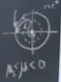
Bu sistem ikili stabillik içeriyor (bistable). Çok ilginç ve yeni olan tür çatallaşma $\mu_s$'e doğru yaklaştıkça gayrı-stabil ve stabil çevrim çarpışıyor. Çarpıştıkları yer iki üstteki resimde kesikli ve düz eğrinin birleştiği yer. Tum bunlar bize garip bir nesne sunacak, nasil cizecegimi bile tam bilmiyorum.. kesikli mi cizsem, dolu cizgi mi cizsem.. ? Cunku bu nesne yari-stabil bir cevrim.
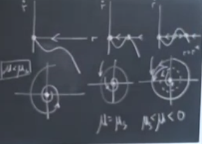
Eğer $\dot{r}$ resmi bağlamında bakarsak [sağ üst köşedeki resim] elimizde bir 5. dereceden polinom var, sola doğru gittikçe, $\mu$ azaldıkça ne olduğunu görüyoruz, maksimum noktası azalıyor, eğri x eksenine teğet hale geliyor [üst ortadaki resim]. Eksenin kesildiği noktada eyer düğüm çatallaşması var, orijin hala stabil ama teğet olan yerde yarı-stabillik var. Neyse, garip objemizi dolu çizgili çizeyim ama aslında yarı stabil olduğunu da belirteyim [üst resimde alt ortada] . Ona doğru gidiş var, orijine gidiş var. Bu çevrimlerin eyer düğümü birleşimi.
Bu garip bir oluş aslında değil mi? Üstteki resimde sol alttaki durumdasınız, orijinde mesela, sabit nokta bir denge durumunda. Sonra parametremizi değiştirmeye başlıyoruz, sağa gidiş başlıyor mesela, pek bir şey farketmezdiniz, garip olan alt soldaki o garip objenin birdenbire pat diye ortaya çıkması, ve büyük bir genliğe sahip halde ortaya çıkması. Yani yavaş yavaş ufak genlikten gelse tamam, birdenbire, pat diye büyük genlikle geliyor. Genlik en baştaki grafikte $r^\ast$'in değişim anında sahip olduğu değer kadar. Tabii.. belki bir şekilde bu objenin gelişini kısmen tahmin etmek mümkün olabilirdi, eğer dışarıdaki çapsal yöndeki akışı izliyor olsak, garip objenin ortaya çıkacağı çap kadar bir elipsin etrafında takılı kalındığı görülebilirdi, ama eğer akış dışarıdan geliyorsa bu olurdu ancak, ama orijin yakınındaki bölgedeysek, hiçbir şeyin tahmini mümkün değil.
Bu derste işlemek istediğim bir diğer konu bu gördüğümüz farklı çatallaşmalara yakın yerlerde ortaya çıkan ölçekleme kanunları. Fizikçiler böyle düşünürler, "farklı çatallaşmaları karakterize eden üsteller nedir?".
$\mu_s$'e yakın doğan çevrimlere bakalım, bunlar ilk başta iki çarpımsal seviyede doğacak tabii, şimdi bu çevrimlerin doğumdaki frekansları ve genliklerini takip edelim, büyük mü, küçük mü, yavaş mı, hızlı mı, vs. Üst ortadaki resimde mesela çevrim "yetişkin" halde doğuyor, doğumdaki genlik dereceleri O(1). Derece O(1) derken, bu problemde dışarıdan tanımlanan ufak bir parametre var, bu parametre çatallaşmadan ne kadar uzakta olduğumü tanımlıyor, uzaklık $|\mu - \mu_s|$. Eğer $\mu_s$'e yakınsam limit çevriminin büyüklüğü nispi olarak küçük değil, O(1)'de. Ayrıca O(1) frekansta, yani ne yavaş ne de hızlı. Eğer üstte $\dot{\theta}$ denklemine bakarsak $r = r^\ast$ olduğu zaman özel bir şey olmuyor, $\dot{\theta}$ basit bir sayı olacak. Yani bu çevrim makul bir frekans ve genlikte dönüyor olacak. Bu tür davranış bu tür çevrimlerin tipik karakteristiğidir.
Bu durumu şimdi bakacağımız örnek ile karşılaştıralım: sonsuz periyot çatallaşması. Bu çatallaşmaların iki turu var, ilkine bakalım, sonsuz periyotlu eyer düğüm çatallaşması (SNIPER) .
Örnek
Daha önce baktığımız bir sistem
$$ \dot{r} = r (1-r^2) $$
$$ \dot{\theta} = \omega - \sin\theta $$
BU sistemde gidiş yolları çapı 1 olan bir çevrime doğru akıyor, eğer orijinde başlamazlarsa tabii, neyse, sistemin ikinci bölümü çember üzerinde akış [hoca bunu atlamıştı ama biz bir ödevde işledik], bu konuya biraz değinelim şimdi. $\dot{\theta},\theta$ grafiğine bakalım, $\omega > 0$ ve oldukça büyük olsun, mesela 1'den büyük, 1 sayısı önemli çünkü $\sin\theta$'nin genliği 1. O zaman $\omega$ 1'den büyük ise $\dot{\theta}$ hiçbir zaman sıfır olmaz.
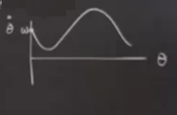
Resim pek iyi olmadı, kusura bakmayın, bir sinüs grafiğine benzemesi lazımdı. Minimum değeri $\theta=\pi/2$ olduğu yerde, o noktada maksimum değer 1'i çıkartıyoruz çünkü, geri kalanlar minimum oluyor. Akış hep sağa doğru, $\pi/2$'ye kadar yavaş denebilir, fakat ondan sonra daha hızlı, o büyük tepenin altına düşen yerlerde özellikle.
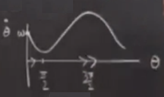
Maksimum nerede? $3\pi/$ noktasında çünkü orada $\sin$ -1 değerinde. Çember üzerinde akışı düşünürsek
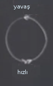
üstte yavaş, altta hızlıyız. Ayrıca ana denklemde $\omega$ 1'e yaklaştıkça üstteki minimum aşağı inecek, tam 1'de x eksenine değiyor olacak, ilgilendiğimiz çatallaşmala orada.
$\omega > 1$ için faz portresini yapalım, radyal yönde yarıçap 1'e doğru gidiş var, bu portre için söyleyecek fazla bir şey yok aslında, orijinde gayrı-stabil bir nokta var, $\omega > 1$ olduğu için $\dot{\theta}$ hep pozitif, $r$'yi arttırırken $\theta$'yi tekdüze (monotonic) şekilde büyütmüş olacağız, o zaman bazen yavaş bölgede bazen hızlı bölgede olacak şekilde dışarı doğru bir limit çevrimine doğru sarmallanacağız. Dışarıdan benzer şekilde içeri, çevrime doğru sarmallanma olacak.
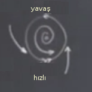
$\omega > 1$ iken mevcut güzel bir limit çevrimi işte. Fakat $\omega$'yi azalttıkça ona kötü şeyler olacak, $\omega$ 1'e yaklaştıkça yavaş kısım o kadar yavaşlayacak ki periyot sonsuzluğa yaklaşacak, tam $\omega = 1$'de artık bir çevrim olmaktan çıkacak, başka bir şey olacak.
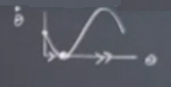
Ne olduğunu görüyoruz, yarı-stabil bir nokta ortaya çıkarttık, bu nokta yavaş bölgeden geliyor, yavaş bölge o kadar yavaşladı ki artık bir denge noktası haline geldi.
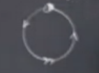
Çember üzerinde yarı-stabil nokta var artık, niye döngü üzerinde eğer düğüm çatallaşması teriminin kullanıldığını şimdi daha iyi anlıyoruz belki, çünkü döngü üzerinde bir sabit nokta birdenbire peydahlanıverdi, ve döngü üzerinde akış sağ ve solda yavaş, altta hızlı olacak şekilde. En üstte çok yavaş, orada tıkanıklık var, ayrıca burada sanki homoklinik yörünge var gibi, çünkü oradan çıkan akış tekrar oraya dönüyor.
Bu arada $\theta = \pi/2$ olduğu yerde bir değişmez çizgi (invariant line) var, bu durumda $\dot{\theta} = 0$, $r$ herhangi bir değer. Değişmez çizgi bizi orijinden o yarı-stabil acaip noktaya götürüyor. Dışarıdan da oraya bir gidiş var.
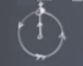
Geri kalan gidiş yollarını tahmini şekilde tamamlamak zor değil, birkaç tanesine bakalım,
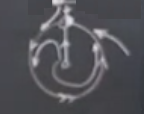
$\omega < 1$ olduğu zaman ne olur?
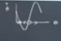
Üstteki gibi bir durum olur. Eksen iki yerden kesiliyor, akışın negatif olduğu yerler var, bu durumda çember üzerinde geriye doğru gidiyoruz. Soldaki nokta stabil, sağdaki gayrı-stabil. Bu iki nokta çember resminde iki farklı yöne giden ışın gibi gözükecek,
Çizgileri tamamlarsak,
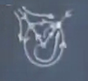
Şimdi problemi ölçekleme açısından ele alalım. Çatallaşmaya yaklaşırken periyota ve genliğe ne olur diye sorabiliriz yine, önce resmi çizelim, $r,\theta$ yerine $x$ ve zamana bakalım. Şimdiye kadar $x,t$ bazlı kartezyen kordinatlardan bahsetmemiştik ama bunu tabii ki yapabiliyoruz, çünkü zaman her zaman dolaylı olarak sistemin bir parçası durumunda.
Yavaş hızlı çembere bakarak $x,t$'ye ne oluyor anlamaya uğraşalım. Çemberin sağ orta kısmından başlayalım, çemberde yukarı doğru çıkarken $x$'im azalacak, küt diye aşağı inecek,
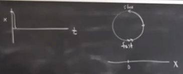
Ama sonra çemberin en üst noktasındaki yavaş bölgeye geliyoruz, orada kağnı hızındayız, $t$ ekseni boyunca uzun uzun gidiş oradan geliyor. Onu geçer geçmez hızlı bölüm, çemberde hızlı dönüp tekrar üst noktaya geliyoruz, $x,t$ bağlamında aşağı iniş çıkış bu sırada, ve tekrar $t$ ekseni boyunca kağnı gidişi..
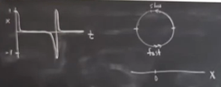
Bu grafik tanıdık geliyor mu bu arada? EKG aletiyle alınan kalp atış sinyallerine benzemiyor mu? Bu benzerlik aslında bir kaza değil, kalp atış dinamiği incelenince kalp hücrelerinde bu tür çatallaşmanın ortaya çıktığı görülmüştür. Bu sebepten dolayı zaten bu çatallaşma literatürde oldukça önemli.
Ölçek konusuna gelelim şimdi, grafikte iki farklı zaman ölçeği var, kağnı hızı, hızlı ınış çıkış, vs. dediğimiz bölgelere tekabül ediyor bunlar, birisi yavaş, diğeri hızlı. Bu bölgelerdeki periyotu hesaplayabilir miyiz acaba? Cevap evet. Diyelim ki $\omega > 1$ durumuna bakıyoruz, ki bu durumda elimizde bir çevrim olduğunu biliyoruz, burada periyot $T$ için $dt$'yi entegre etmek lazım,
$$ T = \int_{0}^{T} \mathrm{d} t = \int_{0}^{2\pi} \frac{\mathrm{d} \theta}{\omega - \sin\theta} $$
Eşitliğin sağı mümkün oldu çünkü $\dot{\theta}$ hatırlarsak $\mathrm{d} \theta / \mathrm{d} t$, bu formülü $dt$ tek başına gelecek şekilde tekrar düzenlersek üsttekini elde ediyoruz. Entegral limiti $2\pi$'ye gidiyor, bir dönüşü göz önüne almak için. Bu temiz bir entegral, kompleks değişkenleri metotunu, artık teorisini (residue theorem) kullanarak çözülebilir. Ya da trigonometrik yerine geçirme ile de çözüme erişebiliriz, bir numara var ki trigonometrik fonksiyonlar rasyonel foksiyonlara çevirilebiliyor. Çözümün kendisinin size bırakıyorum, hesaplayınca,
$$ \int_{0}^{2\pi} \frac{\mathrm{d} \theta}{\omega - \sin\theta} = \frac{2\pi}{\sqrt{\omega^2 - 1}} $$
elde ediliyor. Limite giderken davranışı kabaca sağdaki sonucu doğruluyor, diyelim ki $\omega$'yi çok büyüttük, ki 1'den çok daha büyük olacak şekilde [ki $\sin\theta$'ya iyice baskın hale gelir] o zaman entegralin içi $\mathrm{d} \theta / \omega$ gibi davranır, o zaman entegral $2\pi / \omega$ olur. Eşitliğin sağ tarafının aynı sonuca yaklaştığını görebiliyoruz.
İlginç bir durum var, $\omega=1$ olduğu yerde üstteki sonuçta bir eşsizlik (singularity) var. Eğer faktorize edersek,
$$ = \frac{2\pi}{\sqrt{\omega + 1}} \frac{1}{\sqrt{\omega - 1}} $$
ki $\omega \to 1$ iken üstteki değer $\frac{2\pi}{\sqrt{2}} \frac{1}{\sqrt{\omega-1}}$'a yaklaşır. Bu formülün sonsuzluğa belli bir hızda, $\frac{1}{\sqrt{\omega-1}}$ hızında yaklaştığını görüyoruz, bu hız 1 bölü sıfırın karekökü olarak betimlenebilir, ya da $x \to 0$ iken $1 / \sqrt{x}$ hızında. Bu evrensel bir durum, üstteki türden eyer düğüm çatallaşmalarının karekteristik bir özelliği. Genel bir argüman var ki bu tür çatallaşmalarda gösterdiğimiz uzaklaşan çarpan hep "1 bölü bir şeyin karekökü" formunda, $1 / \sqrt{\mu}$ diyelim ki örneğimizde $\mu = \omega -1$ idi, genel formda $\mu$ parametre uzayında eyer düğüm çatallaşmasına olan uzaklık.
Peki genlik? Dikkat edersek çevrimin genliği O(1), çevrim küçülmüyor, sadece periyotu gittikçe uzuyor.
Çevrim Çatallaşmalarının Evrensel Davranışı
$\mu$ çatallaşma parametre uzayına olan uzaklık olsun, ki $\mu << 1$, ki $\mu = 0$ noktasında çatallaşma ortaya çıkacak. Şimdi çatallaşmaya yakın noktada stabil çevrim yaratıldıktan sonra (ya da yokedilmeden önce, bakış açısına göre değişir) genliği ve periyotu nedir sorusunu sorabiliriz. Ortaya çıkabilecek fenomenler süperkritik hopf, diğeri çevrimlerin eyer düğüm çatallaşması, ya da sonsuz periyot SNIPER. Tüm bu fenomenler birbirine çok benzer gibi geliyor ama hatırlayalım, böyle değiller. Fenomenlerden biri birkaç çevrimin birbirini yoketmesi, SNIPER ile bir eyer düğüm sabit noktası çevrim üzerinde ortaya çıkıyor. Bir diger fenomen homoklinik çatallaşması, bu fenomeni bu derste çok detaylı anlatmayacağım, [1] kitabimin 8.4 bolumunde daha detay var.
$$ \begin{array}{|P{4cm}|P{6cm}|P{4cm}|} \hline & Stabil limit çevriminin genliği & Çevrimin periyotu \\ \hline Süperkritik Hopf & $O(\mu^{1/2})$ & O(1) \\ Çevrimlerin Eyer Düğüm Çatallaşması & O(1) & O(1) \\ SNIPER & O(1) & $O(\mu^{-1/2})$ \\ Homoklinik & O(1) & $O(|\ln \mu|)$ \\ \hline \end{array} $$
Bunlardan bahsediyorum çünkü bazen bir sistemi incelerken elimizde iyi bir model olmuyor, sadece gözlemlenenler var, yani ölçümler / veri. Fakat bazı durumlarda çatallaşma yakınında dikkatli bir şekilde ölçüm yaparak çatallaşmanın üstteki tabloda hangisi olduğunu tahmin etmek mümkün olabiliyor. Ve çoğunlukla sistem üsttekilerden biri, evrensel derken bunu kastetmiştim, onlardan başkası olamaz demiyorum, ama bunlar en yaygın olanları.
Tarif edilen bilgi aradığımız model çeşitlerini azaltır, bir model belli bazı ölçekleme kanunlarını takip ediyorsa o zaman belli bir çatallaşmaya sahip olacaktır.
Şimdi [1]'in 8.6 bölümüne atlayalım, bağlaşımlı titreşirlere (coupled oscillators) bakalım. Titreşirler yabancı bir konu değil ama 8.6'da periyotsalımsı olma (quasiperiodicity) denen bir kavram var, bu yeni. Bu oluş şimdiye kadar gördüğümüz faz uzaylarında hiç ortaya çıkmadı. Şimdiye kadar hangi faz uzaylarını gördük? Çoğunlukla iki boyutlu düzlem üzerinde iş yaptık, ama çizgi üzerinde de bazı örneklerimiz oldu, hatta daire de kulladık. Bir sarkaç örneğinde silindirsel uzay kullandık. İki boyutta elimizde olanlara bakarsak, düzlem var, silindir var ki burada bir değişken açı diğeri reel bir sayı oluyor, sarkaçta böyle olmuştu, sarkacın açısı vardı, hızı reel bir sayıydı. İki boyutta küre (sphere) de kullanılabilir, fakat bu uzay fazla bir yenilik getirmiyor, aşağı yukarı düzlem ile aynı. Fakat torus şekli bazı yeniliklere izin veriyor. Topoloji dersi alanlar bilir, torus şu şekilde
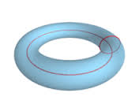
Şimdi torus bazlı uzayı inceleyeceğiz. Torus bazlı uzay eğer elimizde iki açı varsa kullanışlıdır. Mesela şöyle bir sistem
$$ \dot{\theta}_1 = f_1 (\theta_1,\theta_2)$$
$$ \dot{\theta}_2 = f_2 (\theta_1,\theta_2)$$
ki $f_1,f_2$ her iki argümanında $2\pi$ periyotsal fonksiyonlardır, mesela $\sin$, $\cos$, ki zaten o sebeple bu parametreleri açı olarak görmek iyidir. Peki niye tek bir çember üzerinde tek açı yerine iki açı kullanmadım? Şöyle bir çizim yapabilirdim,
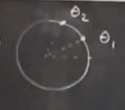
ve zaman geçtikçe $\theta_1,\theta_2$ bu çember üzerinde farklı şekillerde, yönlerde hareket ediyor olurlardı. Sanki çember üzerinde iki koşucu var, çembersel bir parkurda koşturuyorlar. Fakat bu bir faz uzay resmi değil, çünkü elde iki nokta var. Faz uzayının tüm esprisi tek bir noktanın sistemin o an içinde olduğu tüm durumu temsil edebilmesi. Torus ile açıları alttaki gibi kullanabiliriz,
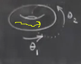
$\theta_1$ torus etrafında dolaşıyor, $\theta_2$ ise torusu kesen hayali bir düzlemde dönen açı olarak görülebilir. Gidiş yolları bu tür faz uzayında sarı çizgiyle gösterildiği gibi mesela, gidiş yolu üzerindeki her nokta farklı bir $\theta_1$ açısının temsil ettiği çemberin üzerindeki bir nokta / ikinci açı ($\theta_2$). Aslında torus bir sürü çemberin yanyana koyulmuş hali olarak görülebilir, birinci açı bu çemberlerden birinin seçiyor, ikinci açı o çember üzerindeki bir noktayı gösteriyor.
Şimdi bu ortamda tanımlayabileceğimiz en basit sisteme bakalım,
$$l \dot{\theta_1} = \omega_1 \qquad (1) $$
$$ \dot{\theta_2} = \omega_2 $$
Hakikaten bu sistem absürt derecede basit, $\omega_1,\omega_2$ sabit sayılar. Gidiş yollarının ne olduğunu biliyoruz, hemen entegre ederek onları bulabiliriz, $\theta$'lar $\omega_1t + sabit$, $\omega_2t + sabit$. Belki bu sistemi daha özel bir sistemin genel hali olarak görmek daha iyi olur, bağlaşımlı titreşirler konusunu işleyeceğimizi söylemiştim, şimdi $\theta_1,\theta_2$ arasında bir bağlaşım, ilinti yaratalım,
$$ \dot{\theta_1} = \omega_1 + K \sin(\theta_2-\theta_1) \qquad (2)$$
$$ \dot{\theta_2} = \omega_2 + K \sin(\theta_1-\theta_2)$$
O zaman ilk bakacağımız hal $K$'nin sıfır olduğu durum, o zaman (1)'i elde ederiz. (1)'e bakalım, bu durumu aynı çember üzerinde iki koşucu olarak görürsek, bu koşucular birbirinden habersiz iki koşucu, birbirlerinin yanından geçiyorlar, ama birbirleriyle hiç iletişimleri yok, birbirlerini görünce yavaşlamıyor, hızlanmıyorlar.
Sistem sabit temelli olduğu için fay uzayını karesel olarak ta gösterebilirdik,
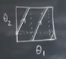
Sistem iki türlü olabilir.
- Tür
$$ \frac{\omega_1}{\omega_2} = \frac{p}{q}$$
$p,q$ tamsayı, basitlik için $p,q$ ortak çarpanı yok diyelim, yani bölüm sonucu rasyonel, o zaman üstteki grafikte rasyonel bir eğim var, ve torusta periyotsal, kapalı yörüngeler olacak. Eğer $p=3,q=2$ ise bir koşucu 2 tur atarken diğeri 3 tur atıyor diyebilirdik. Aslında 3,2 durumu ilginç,
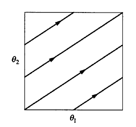
Bu torus üzerinde bir trefoil düğümü denen şekli çıkartıyor,
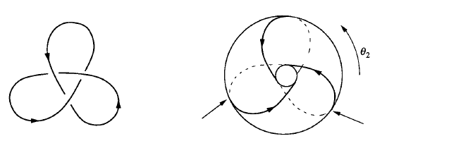
Solda bu düğüm, sağda gidiş yolunun torus üzerindeki hali var. Aslında 3,2 sayılarının çok özel bir durumu yok, $p,q$ ne zaman birbirlerine izafi olarak asal sayı (yani ortak bölenleri yok) olursa o zaman üstteki şekil ortaya çıkıyor. 5,3, ya da 11,8 de olabilirdi.
- Tür
Bu durum $\omega_1/\omega_2$ oransız (irrational) sayı olduğunda ortaya çıkıyor, mesela $\omega_1 = \sqrt{2}$ ve $\omega_2 = 1$. O zaman periyotsalımsı bir durum elde ediyoruz.
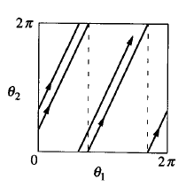
Bu durumda alttan yukarı doğru gidiş var ama gidiş yolları kapanmıyor, çizgiler birbirlerine dokunmuyorlar. Yani torustaki hiçbir gidiş yolu kapanmıyor, eğer kapansaydı dönüşü sayabilirdik, başlangıca geri geliş olurdu. Burada bu durum yok, ve her gidiş yolu "yoğun". Yoğun şu demektir; torus üzerinde geçilmemiş bir nokta seçelim, ve onun etrafında $\epsilon$ büyüklüğünde bir disk çizelim, herhangi bir gidiş noktası o diskten geçer mi? Yoğunluk durumunda cevap evettir. Bu kaos mu? Değil - kabul ediyorum olanlar oldukça acaip, fakat kaos bundan daha acaip.
Gerçi kaosun ne olduğunu da daha anlatmadım, ama önümüzdeki derslerde anlatılacaklara bir tanıştırma yapmak gerekirse, üstteki örnekteki birbirine yakın iki gidiş yolu üzerinde iki yakın nokta düşünelim. Bu noktaları kendi gidiş yollarında nereye gittiğini zaman geçtikçe takip edersek birbirlerine yakın mı kalırlar, yoksa üstel hızda birbirlerinden ayrılırlar mı? Kaotik bir sistemde ikinci durum olur. Fakat üstteki sistemde bu ayrılma lineer olacaktır, bunu hesaplamak mümkün. O sebeple sistem kaotik değil diyorum.
Dersi bitirmeden önce bağlaşımlı durum hakkında birşeyler söylemek istiyorum. $\phi = \theta_1 - \theta_2$ olsun. Şimdi (2) sistemine tekrar bakalım, diyelim ki $\theta_2$, $\theta_1$'in biraz önünde, ikisi de aynı yöne koşuyorlar,
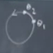
Bu durumda, $K > 0$ için, aradaki açı fark ufak olacağı için ufak pozitif sayının sinüsü pozitif olacaktır, çarpı $K$, ki o da pozitif, sonuç olarak $\omega_1$'e pozitif bir sayı ekliyor olacağız, yani geride kalan koşucunun hızına pozitif bir değer ekliyor olacağız. Bu geride kalan koşucu hızlanacak demektir. Önde olan koşucuya tam tersi olacak, o yavaşlayacak. Bu bağlaşım ortaya bir senkronizasyon çıkartır. Koşucular birbirlerine yaklaşmaya meyilli olurlar, yani faz bakımından senkronize hale gelirler. Eğer bir arkadaşımla koşuyorsam bu istediğim bir şeydir çünkü yanyana koşmak isteriz değil mi? Arkadaş arkaya düşünce ona "hadi hızlan, koş yetiş" vs deriz, bu arada biz de kendi koşumuzu yavaşlatabiliriz ki arkadaş yetişsin, ki böylece yanyana koşup konuşabilelim. Her neyse bu modelin yakaladığı bu tür bir hareket.
$\phi$ tanımlamıştık, peki $\dot{\phi}$ ne olur?
$$ \dot{\phi} = \omega_1 - \omega_2 - 2K \sin\phi $$
Bu denklem tanıdık gelebilir, farklı değişkenlerle olsa da bu denklemi sonsuz periyot çatallaşmasında gördük. O zaman aynı analiz burada da geçerli olur. $|\omega_1-\omega_2| < 2K$ olduğu zaman $\phi^\ast$ için iki sabit nokta olacaktır. Torustaki diyagram şuna benzer,
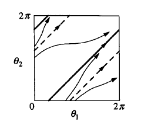
Eğer $K$ yeterince büyükse (üstte belirtilen şart) o zaman sistem alttan sağa yatık şekilde üste giden çizgilerdedir. Bu senkronize faz halidir, $\theta_1-\theta_2 = \phi^\ast$ stabil bir mesafedir ve öyle kalacaktır. Koşucular senkronize olurlar, bu illa yanyana demek olmayabilir ama mesafeleri değişmez. Senkronizasyon olmazsa bir koşucu diğerine sürekli tur atıyor olur.
Kaynaklar
[1] Strogatz, Nonlinear Dynamics and Chaos
Yukarı